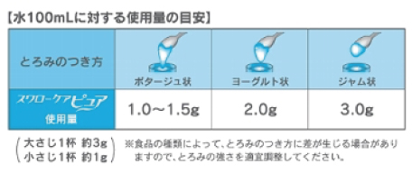

スワローケアピュア
●使用方法
使用上の注意をよく読んでからご使用ください。
とろみをつけたい飲み物や液状食品をよくかき混ぜながら、使用量の目安を参考にして本品を加えてください。
■とろみが強すぎたときは・・・
同じ飲み物や液状食品を加えてとろみを薄めることで再調整が可能です。
■とろみが弱すぎたときは・・・
濃いめにとろみづけした同じ飲み物や液状食品を加えると、とろみを強くすることができます。
※一度とろみづけした状態で後から本品を再度加えると、ダマができることがあります。
●使用上の注意
・ 重度の嚥下障害のある方は、ご使用前に医師、歯科医師、栄養士等にご相談ください。本品の使用量を適宜増減してください。
・ 飲み物、食べ物の種類、量、温度等によって、とろみのつき方が若干異なりますので、本品の使用量を適宜増減してください。
・ 本品を一度に大量に加えたり、一度とろみのついた状態で後から本品を再度加えると、ダマができる場合があります。
・ 調整後、飲食される前には食べやすいとろみであるかどうかを、必ずご確認ください。
・ 本品を顆粒や固まりのまま、口の中に入れないでください。
・ 調整後は、なるべく早めにお召し上がりください。
| 栄養成分表示（100gあたり） | |
|---|---|
| エネルギー | 314kcal |
| たんぱく質 | 0.6g |
| 脂質 | 0g |
| 糖質 | 65.4g |
| 食物繊維 | 24.9g |
| ナトリウム | 1490mg |
| カリウム | 586mg |
| 水分 | 6.7g |
| 品名 | とろみ調整食品 |
| 原材料名 | デキストリン、増粘多糖類、塩化カリウム、ｐH調整剤 |
| 内容量 | 2ｋｇアルミパウチ×4袋／ケース |
| 賞味期限 | 製造日より18ヶ月 |
| 保存方法 | 高温多湿を避け、常温で保存 |